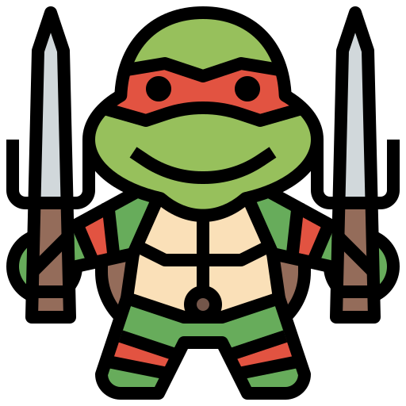
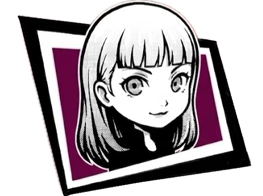

About Our Project
Our project focuses on climbing-related user needs and aims to design a human-centered digital solution for beginner support, community connection, and better access to climbing information and services.
We want to improve the overall climbing experience by helping users understand climbing basics, find suitable partners or trainers, and engage more confidently in the climbing community.
Group Members

Chenyu Du
Student ID: 2360743
We

Junyan He
Student ID: 2363304
Are
Jiafei Sun
Student ID: 2361510
A
Youming Yang
Student ID: 2361217
Team!!!
Project Personas
Persona 1: Emily Chen - Beginner Climber
Age: 20
Occupation: University Student
Background: Emily recently became interested in indoor climbing after seeing friends post about it online. She wants to try climbing, but she feels nervous because she does not understand the rules, route markings, or equipment.
Goals: Learn basic climbing knowledge, feel less intimidated, and have a smoother first experience in the climbing gym.
Pain Points: She does not know where to start, finds climbing terminology confusing, and feels uncomfortable asking too many questions in person.
Needs: A clear beginner-friendly guide, easy explanations, and support that helps her feel confident and included.
Persona 2: Ryan Li - Social and Improving Climber
Age: 23
Occupation: Graduate Student
Background: Ryan has some climbing experience and goes to the gym regularly. He wants to improve his skills, meet climbing partners, and discover useful training resources, but finds it difficult to connect with the right people and information efficiently.
Goals: Find reliable climbing partners, discover coaching opportunities, and improve his climbing performance.
Pain Points: Information is scattered, social connection is inconsistent, and it is hard to find people with similar schedules or skill levels.
Needs: Better access to climbing community features, partner matching, and organized learning or coaching resources.